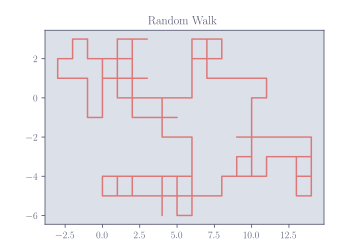

The Figure class helps to include matplotlib figures which are generated within the document, as well as pre-existing image files. The following example generates a random walk and plots it using matplotlib (with some appropriate styling applied):
Figure Example
\begin{python}
import numpy as np
import matplotlib.pyplot as plt
# Generate a random walk
steps = np.random.randint(0, 4, size=100)
x = np.cumsum(np.where(steps == 0, -1, np.where(steps == 1, 1, 0)))
y = np.cumsum(np.where(steps == 2, -1, np.where(steps == 3, 1, 0)))
# Plot the walk
fig, ax = plt.subplots()
ax.plot(x, y)
ax.set_aspect("equal")
ax.set_title("Random Walk")
# Create a figure object
figure = Figure(fig, caption = "A random walk in 2D")
# Export the figure
export(figure)
\end{python}

A random walk in 2D

A random walk in 2D